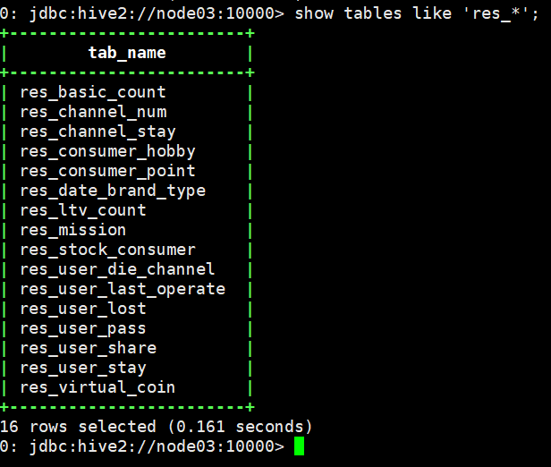
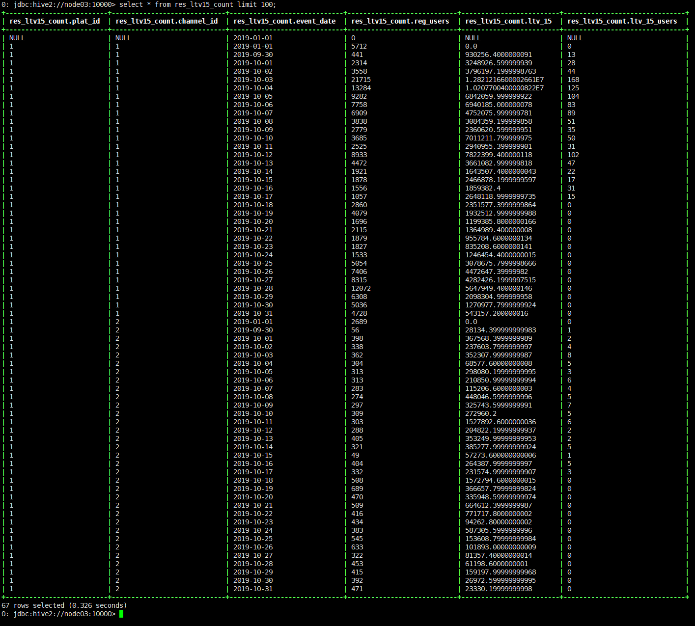
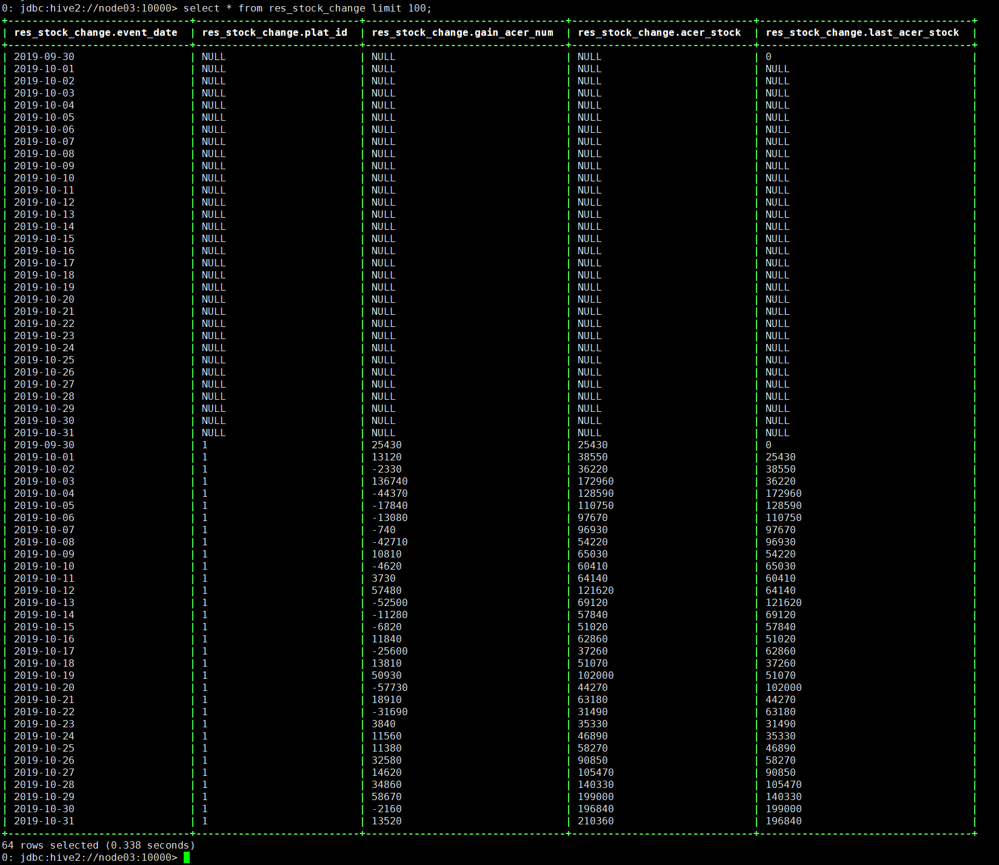

1、完成本次课各res层指标的求取
 2、写出计算15日ltv的hql语句，并将计算结果截图
set hive.exec.mode.local.auto=true; set hive.exec.mode.local.auto.inputbytes.max=262144; set hive.exec.mode.local.auto.input.files.max=5; create database if not exists game_center; use game_center; drop table if exists game_center.tmp_user_ltv15; create table if not exists game_center.tmp_user_ltv15 as select t.channel_id,t.plat_id,t.server_id, t.user_id,t.device_brand,t.device_type,t.reg_date,t.reg_time,t.role_id,t.role_name,t.role_create_date,t.role_create_time, t1.pay_date,case when t1.recharge_amount is null then 0 else t1.recharge_amount end as recharge_amount, 0 as operating_system from dw_user_basic_info t left outer join ( select channel_id,plat_id,user_id,server_id,from_unixtime(event_time,'yyyy-MM-dd') as pay_date,role_id,sum(recharge_amount) as recharge_amount from ods_role_recharge group by channel_id,plat_id,user_id,server_id,from_unixtime(event_time,'yyyy-MM-dd'),role_id ) t1 on (t1.channel_id=t.channel_id and t1.plat_id=t.plat_id and t1.server_id=t.server_id and t1.user_id=t.user_id and t1.role_id=t.role_id); drop table if exists game_center.res_ltv15_count; create table if not exists game_center.res_ltv15_count as select t.plat_id,t.channel_id,t.event_date, t.reg_users,ltv_15,ltv_15_users from ( select plat_id,channel_id,reg_date as event_date, count(distinct user_id) as reg_users from tmp_user_ltv15 group by plat_id,channel_id,reg_date ) t left outer join ( select plat_id,channel_id,reg_date as event_date, sum(case when pay_date<=date_add(reg_date,14) then recharge_amount else 0 end) as ltv_15 from tmp_user_ltv15 where recharge_amount>0 group by plat_id,channel_id,reg_date ) t1 on (t1.plat_id=t.plat_id and t1.channel_id=t.channel_id and t1.event_date=t.event_date) left outer join ( select plat_id,channel_id,reg_date as event_date, count(case when pay_date=date_add(reg_date,14) then user_id end) as ltv_15_users from ( select plat_id,channel_id,reg_date,pay_date,user_id from tmp_user_ltv15 where recharge_amount>0 group by plat_id,channel_id,reg_date,pay_date,user_id ) t group by plat_id,channel_id,reg_date ) t2 on (t2.plat_id=t.plat_id and t2.channel_id=t.channel_id and t2.event_date=t.event_date);
 3、dw\user\behavior\info表中，求取每个平台、每个登录日期下， 获得的元宝总量、元宝存量的总量及前一天的元宝存量的总量
set hive.exec.mode.local.auto=true;
set hive.exec.mode.local.auto.inputbytes.max=262144;
set hive.exec.mode.local.auto.input.files.max=5;
create database if not exists game_center;
use game_center;
drop table if exists game_center.res_stock_change;
create table if not exists game_center.res_stock_change as
select login_date as event_date,plat_id,acer_stock-last_acer_stock as gain_acer_num,acer_stock,last_acer_stock
from
(
select login_date,plat_id,acer_stock,
LAG(acer_stock,1,0) OVER(PARTITION BY plat_id ORDER BY login_date) AS last_acer_stock
from
(
select login_date,plat_id,sum(acer_stock) as acer_stock
from dw_user_behavior_info
group by login_date,plat_id
) t
) t;
 其中，第三列gain\acer\num字段表示获得的元宝总量：正数表示当天的 购入量+赠与量>消耗量，负数表示当天的 购入量+赠与量<消耗量